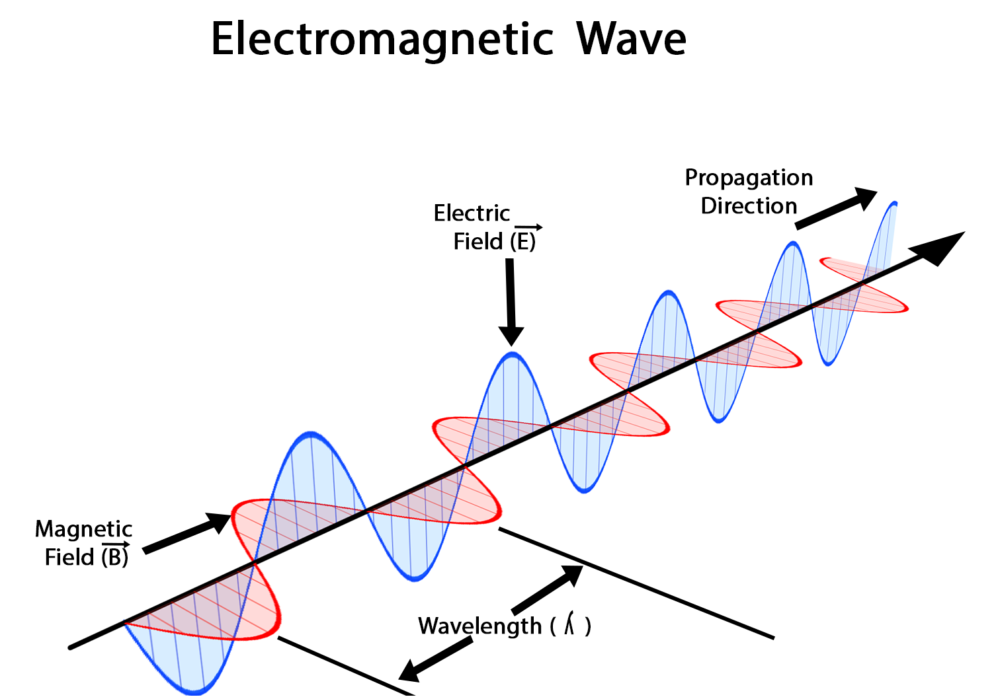

Bevezető
Már több mint 100 éve ismerjük az elektromágneses hullámokat. A XX. század elején felfedezték azt is, hogy elektromágneses hullámokkal jeleket (információt) továbbíthatunk. A szikratávírót mára felváltotta a távközlési műholdak és a mobiltelefon-hálózatok bonyolult rendszere. A háztartási eszközeinkben vagy a „radarkontroll” felirat mögött is az elektromágneses hullámok rejtőznek. Sőt a klímaváltozásban szerepet játszó üvegházhatás is az elektromágneses hullámok közé tartozó infravörös sugárzás tulajdonságainak következménye.
Az elektromágneses hullámok mindenütt jelen vannak a környezetünkben. Ilyen a látható fény, de ezenkívül még nagyon sok más elektromágneses hullám – más néven elektromágneses sugárzás – vesz körül bennünket. Ezeket gyakorlati okokból a levegőben mérhető hullámhosszuk alapján csoportosítjuk. Az alábbi táblázatban rendszerezve látjuk az elnevezéseket és a hozzájuk tartozó hullámhosszakat:
| # | Hullámhossz levegőben | Elnevezés | Felhasználás |
|---|---|---|---|
| 1 | méter, kilométer | rádióhullámok | rádióadások továbbítása |
| 2 | centiméter | mikrohullámok | mikrohullámú sütő, mobiltelefon |
| 3 | tized-ezred milliméter | infravörös hullámok, hősugárzás | melegítés, távirányítók |
| 4 | néhány száz nanométer | látható fény, ultraibolya sugárzás | látás, szolárium |
| 5 | pikométer | röntgensugarak, gammasugarak | röntgenátvilágítás, anyagvizsgálat |
| 6 | pikométernél kisebb | kozmikus sugárzás | nagyenergiájú fizikai kutatások |
A nanométer 10–9 m-t, a pikométer 10–12 m-t jelent.
Az elektromágneses hullámok egyik fontos tulajdonsága, hogy nagy sebességgel haladnak a térben vagy az elektromos vezetékek, kábelek mentén. Ezért használjuk őket üzenetek, adatok, képek, hangok gyors továbbítására, például a rádió, a televízió és a telefon használata során.

Az elektromágneses hullámok kölcsönhatása az anyaggal
Ha elektromágneses hullámok új anyaghoz érnek, részben visszaverődnek a felületről, részben behatolnak az új anyagba, ahol általában megváltozott sebességgel és irányban haladnak tovább. Terjedésük során erősségük csökken, energiájuk egy részét átadják a környezetükben lévő atomoknak, molekuláknak.
Az elektromágneses hullámok és az anyag kölcsönhatása sok tényezőtől függ. Az egyik legfontosabb ilyen tényező a hullám frekvenciája. Egy másik lényeges tényező az anyag felépítése, elektronszerkezete, mert ez dönti el, hogy adott frekvenciájú sugárzásból adott idő alatt mennyi nyelődik el egy anyagban.

A fény általában visszaverődik a szilárd tárgyak felületéről, de a mikrohullámok segítségével akár a föld alá vagy a falak mögé is benézhetünk. A technikai alkalmazások egyik nagy csoportját a különféle célra kifejlesztett radarok, képalkotó eszközök jelentik.
Hogyan lép kölcsönhatásba az elektromágneses hullám az anyaggal? Az anyag atomokból épül fel. Az atomokban töltött részecskék, pozitív töltésű protonok és negatív töltésű elektronok vannak. Amikor az elektromágneses hullámok anyagba ütköznek, a bennük változó elektromágneses mező kölcsönhatásba lép az anyagban lévő töltött részecskékkel, erőt fejt ki azokra, energiát ad át nekik.

Az elektromágneses hullám erőt fejt ki az anyag töltött részecskéire. A fény leginkább az atomok közötti kémiai kötést létesítő vegyérték-elektronoknak adja át energiáját.
Hőmérsékleti sugárzás
Minden test elektromágneses sugárzást bocsát ki, amelynek jellemző frekvenciája szoros kapcsolatban van a test hőmérsékletével. Ezért hőmérsékleti sugárzásnak is nevezik. A melegvérű élőlények hőmérsékleti sugárzása jellemzően infravörös sugárzás.
Az egész világmindenséget egyenletes elektromágneses háttérsugárzás tölti ki, amely 2,725 K értékű hőmérsékleti sugárzás. Az ősrobbanáskor igen forró univerzum mostanra ennyire hűlt le tágulása következtében. A világűrből nagy energiájú gamma-sugárzás is érkezik a Földre, ami például atomok, részecskék ütközésekor keletkezik, de érkezik a kozmoszból rádiósugárzás is.
Rádióhullámok
A rádióhullámok, az infravörös sugárzás, a mikrohullámok, a röntgensugárzás, az ultraibolya sugarak ugyanolyan elektromágneses hullámok, mint a fény, csak más a frekvenciájuk, és így a hullámhosszuk is. A hullámhosszot a periódusidő (ami a frekvencia reciproka) és a terjedési sebesség szorzata adja meg. A nagyobb frekvenciájú elektromágneses hullámok adott idő alatt általában több energiát adnak át az anyagnak, mint a kisebb frekvenciájúak. Az elektromágneses hullámok az anyag töltött részecskéivel lépnek kölcsönhatásba.
Megismerésének története
Az elektromágneses hullámok elméletét James Clerk Maxwell (1831 – 1878) skót fizikus dolgozta ki 1873-ban. A „Tanulmány az elektromos és mágneses térről” című munkájában közzétett Maxwell-egyenletek megjósolták az elektromágneses hullámok létezését. Az elmélet magában foglalta a nagyon rövid ill. nagyon hosszú hullámhosszak létezését, az elektromágneses hullámoknak nincs felső ill. alsó hullámhosszhatára. Ezzel a feltételezéssel Maxwell olyan elektromágneses sugárzások létére következtetett, amelyeket csak a halála után fedeztek fel. A Maxwell-egyenletek helyességét Heinrich Hertz bizonyította be a szikragenerátorral végzett kísérletei alapján.
William Herschel (1738 – 1822) német csillagász észrevette, hogy a kísérleteiben használt fényforrás hőmérséklet-változást idéz elő. Ezzel felfedezte az infravörös (angol rövidítéssel: IR, azaz „infrared”) hősugarakat. (Egy villanykörte a sugárzásának 90%-át ebben a tartományban bocsátja ki.)
Az elektromágneses spektrum
A rádióhullámokat hullámhosszuk szerint csoportosítjuk: megkülönböztetünk hosszúhullámokat (650 m – 10 km), középhullámokat (180 m – 650 m), rövidhullámokat (10 m – 180 m), ultrarövidhullámokat (10 cm – 10 m), deciméteres, centiméteres és milliméteres hullámokat, valamint mikrohullámokat (300 µm – 30 cm). A hosszú-, rövid- és középhullámokat a rádiótechnikában használják, az ultrarövidhullámokat egyaránt alkalmazza a rádiós és a televíziós kommunikáció, valamint a radartechnika (a mikrohullámok mellett). A mágnesesrezonancia-tomográfiában (MRI) ultrarövid és deciméteres hullámokat használnak, a mobiltávközlés ugyancsak deciméteres hullámhossztartományban történik. Mikrohullámokat alkalmaznak gyógyászati célokra is, ugyanis a szövetek belső melegítése, a vérellátás fokozása jótékony hatású bizonyos mozgásszervi megbetegedéseknél. A mikrohullámú sütőben a dipólusos molekulákat (pl. víz) a változó elektromágneses mező forgásra kényszeríti, és a forgásuk során fellépő dielektromos veszteségek miatt hő fejlődik. A mikrohullámú sütőben kialakuló állóhullámok csomópontjaiban nincs molekuláris forgás, ezért forgótányér nélkül néhány centiméterenként változnának a hideg és meleg pontok az ételben.
A látható fény olyan elektromágneses sugárzás, amely 380 nm és 780 nm közötti hullámhosszával az infravörös és az ultraibolya sugárzások tartományai közé esik. A fényt – mint bármely elektromágneses hullámot – három alapvető jellemzője határozza meg. A fényintenzitás az elektromos és mágneses térerősség-komponensek amplitúdójával van összefüggésben, és az emberi szem fényerőként, fényességként érzékeli. A fény frekvenciája vagy hullámhossza határozza meg a fény színét. A fény polarizációján a rezgés irányát értjük, amelyet az emberi szem normál körülmények között nem érzékel. A fény polarizálhatósága arra bizonyíték, hogy az elektromágneses sugárzás transzverzális hullám.